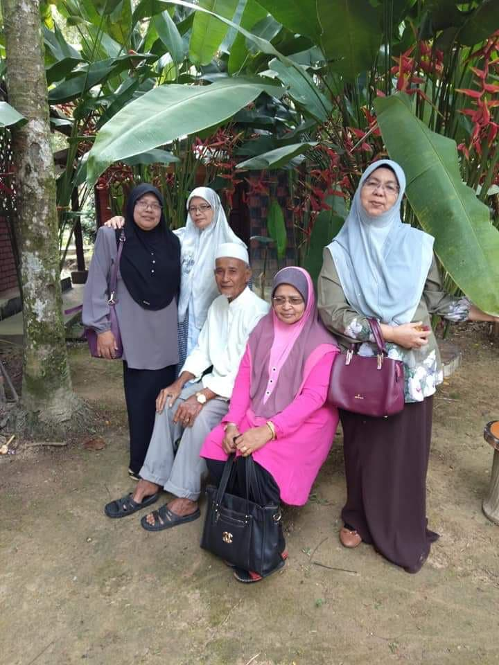
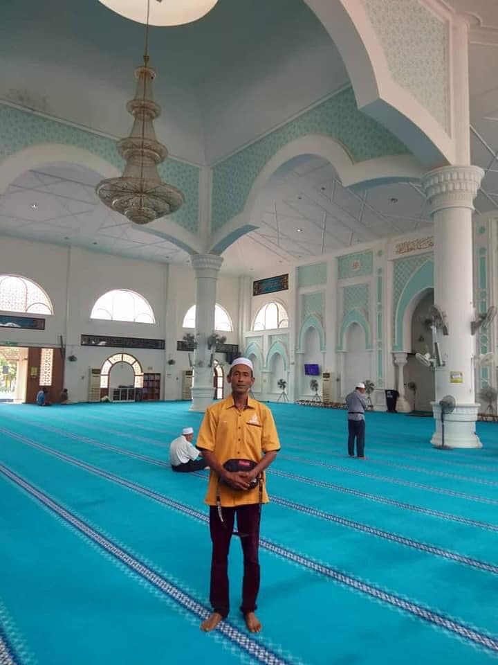
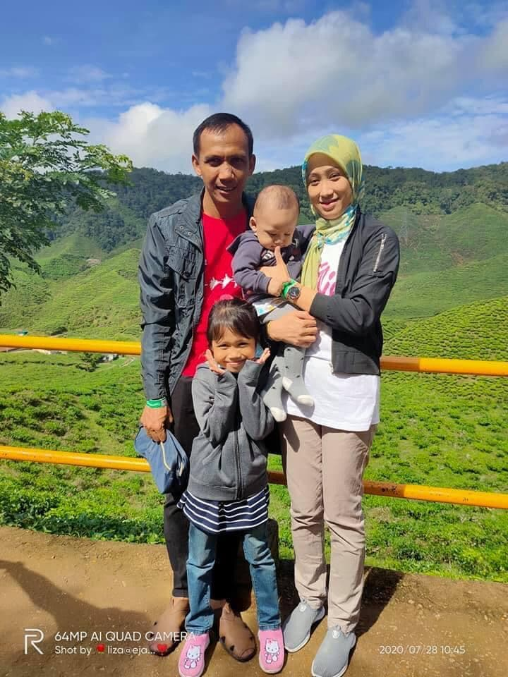
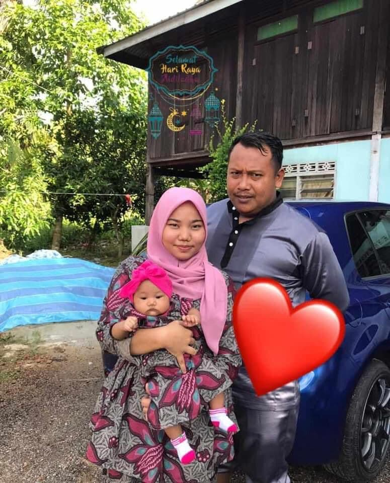
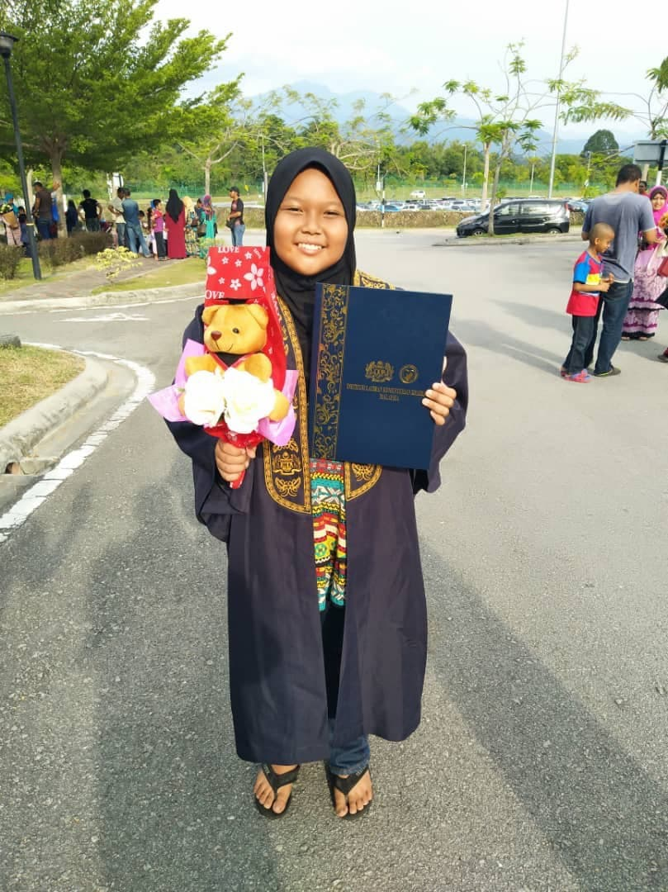

Home
Biodata
Experience
Education
Family
Gallery
Other Necessary Pages
Welcome to My World!
Let's get to know my family!

Nordin Bin Yahya (Father)
Manishah Binti Mohamad Nor (Mother)

Nurul Anuar Bin Nordin (Eldest brother)

Mohd Subihi Bin Nordin (Second brother)

Mohd Fairus Bin Nordin (Fourth brother)
Mohd Saiful Bin Nordin (Sixth brother)

Nurmala Binti Nordin (Youngest sister)